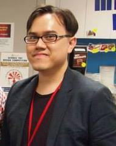

People
who are we as a group? group descriptions
Popo The visionary and leaderThe meaning of living maybe vague and different for many people. And Popo believes that whatever it is, leaving a sparkle of light of your own in other people's hearts is the most important. Being isolated in high school, Popo was a very shy introvert. However, she is thankful for this experience as she could see how a small action can enlighten a person for a day! Through the training for Engineering Student Ambassador and experience in being peer mentor and committee member (and sometimes founder) for several organizations, she explores herself and enriches her personalities. Nonetheless, she still remembers the time without the help of anyone and hopes to make a difference in UST. That's why she is fond of founding CSE One, in wish of gathering CSE students, helping each other, building a community together, and neglect the language or cultural barrior, that no one is ever left alone |
|
Lance Your everyday really ordinary HKUST guyLance was born in Indonesia, but moved to Hong Kong at the age on nine. Thus technically, he is both "international" and "local" student. Thus, he understand the difficulties of international students on interacting with local communities. On his first few day at HKUST, he pranked various student society members by answering their promotion in English.Surprisingly , most of the promoter gave up communicating and left. After being invited by Peter to join, he was motivated by the goal of CSE One and accepted without hesitations and seek to close the communication gap between locals and non locals. |
|
Justinas "Veni, vidi, vici" Julius CaesarThat’s how we should start an introduction to CSE One as all the members of this group are here to do their best to its followers. Justinas, or just Justin, is only one of CSE One persons who are passionate about helping other people to get involved in the fast-moving world of technology. Justinas was never interested in something like that in his earlier days (very early days, like 15 years ago), but the first access to the motherboard of a computer had influenced him so that he came to HKUST to study Electronic Engineering. However, one JAVA program (experience in the Pascal programming language was not that effective) and Justinas had to change his priorities over his future at HKUST. As a result, he’s been combining his love for hardware and software in the Computer Engineering program for three years at HKUST, and he’s been a member of CSE One since it was founded. |
|
 |
AnkithAnkith, is a very friendly, fun loving and innovative person and he is also one of the founding fathers of CSE One. He is very positive and believes in unity between students of different nations and backgrounds, hence he came up with the name "CSE One”. He has participated in programming competitions and volunteered for helping children with autism. He is presently working on an app project for Hearing Impaired Children. He is also working on his own app(CabSplit), for taxi sharing in Hong Kong. |
 |
Jenny RookieJenny was born in Korea but moved to Hong Kong in 2002. She is relatively new to computer science. In fact, she came to HKUST wanting to study chemical engineering. However, after learning the C language during her leisure time, she grew very fond of the study and decided that she wanted to continue learning programming. Today she is fully immersed in the field of computer science and loves to try out new stuff within related to it. She decided to join and support CSE One because she wanted to contribute to the CSE community. She also wanted to help bridge the gap between the local and the non-local students. |
Mark a typical CSE student that lives with bugs on screenMark is a Korean but he studied in Singapore from the middle school. He did many music-related activities since he was young. He plays clarinet, electric/acoustic and bass guitar and sings too. He was motivated by the CSE One goal as he tried to participate in several societies in HKUST but failed because he does not speak any Cantonese. He believes it is very important for both local and non-local students to form one true society. He also thinks CSE One will be able to hold an important role to make the two separate societies to become so. |
|
|  | Peter The TA who never leaves you alonePeter is an excellent advisor enthusiastic to share experience with students. His expertise lies in advising various student and alumni groups, including CSE One, CSE Alumni Association, CSE Entrepreneurship Club and Student Innovation for Global Health (SIGHT). He led several successful events, such as CSE Mentorship Programme and Hackathon@HKUST. Being appointed as Teaching Associate in the Department of CSE, he also serves as Academic Counsellor in the same department, and was appointed as a faculty advisor in School of Engineering. |